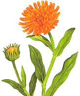

The medicinal power of calendula.
The word calendula comes from the Latin caleo, meaning "warm" or "to glow," a name that appropriately reflects the blossom's sunny, golden hue. Christians called it "marygold" or "marybud" because its blooming coincided with festivals celebrating the Virgin Mary. Other names for the herb include summer's bride, husbandman's dial, holigold and "poor-man's saffron" because its color and mild peppery taste make it an excellent and inexpensive substitute for the Spanish condiment.
Calendula prefers a rich loam and full sun, but will grow in most soils and partial shade. A self-seeding annual, it can become quite invasive if grown in ideal conditions.
Medicinally, calendula has proven itself as a very effective skin conditioner for cuts, scrapes, wounds and burns. A balm for new mothers, calendula is very beneficial for diaper rash and for soothing nipples that are sore from breastfeeding. To make your own calendula cream, add three grams of flower petals to two cups of edible oil (preferably olive oil). Place in a double boiler and gently heat for two hours. Remove from the heat and strain out the petals. Place fresh petals in the oil and repeat the gentle heating for another two hours. Strain out the calendula flowers again and add three grams of beeswax, gently stirring over the heat until the wax and oil have blended. Allow to cool in clean jars before sealing.
Added to a salad, calendula petals not only enliven it with color but also contribute nutrients. The herb is a good source of lutein, a powerful antioxidant shown to be particularly effective in combating age-related macular degeneration, the leading cause of irreversible blindness in North Americans.
Calendula also makes a delightful tea, especially when combined with lemon balm. One caveat: If you're allergic to ragweed, you might react to pot marigold as well.
For culinary use, here's my recipe for "Romantic Rice" for two. I always use long-grain brown rice for its superior taste and nutritional qualities, but white rice can easily be substituted.
1 medium onion, diced
2 teaspoons. olive oil
1 cup fresh, rinsed calendula petals
1 cup water
1/2 vegetable or herbed bouillon cube
1/2 cup of rinsed brown rice
Saute the onion in the olive oil in a small, heavily lidded pot. Add half of the calendula petals to the cup of water in a blender. Blend well and then pour the liquid over the onions. Add the bouillon cube to the water and bring to a boil. Add the rice while stirring. Turn the heat to simmer, cover and cook until the water is absorbed, usually 40 to 45 minutes for brown rice and 25 to 30 minutes for white. When the rice is ready, stir in the rest of the calendula petals. This makes a perfect grain side dish for a fish, chicken, meat or vegetarian entree.
For breakfast, try these Calendula Corn Muffins:
1 cup stone-ground cornmeal
3/4 cup unbleached white flour
1/2 teaspoon salt
2 teaspoons baking powder
2 extra-large eggs
1 cup milk (nondairy such as soy may be substituted)
3 tbsp. corn oil
3/4 cup grated cheddar cheese
1 cup corn kernels
1/4 cup calendula petals
Butter a muffin tin and preheat oven to 375°F. In a mixing bowl, combine corn meal, flour, salt and baking powder. In another bowl, beat the eggs and add the milk and oil, blending well. Stir the cheese and corn into the wet ingredients. Pour the wet ingredients into the dry and blend. Stir the calendula petals into the batter. Fill the muffin tins almost full. Bake for 20 minutes or until golden brown. Let stand for five minutes before serving.
Another caveat: Never use commercially grown flowers. Only use plants that you know have not been subjected to herbicides or pesticides. Washing won't be enough, because over time the plants will absorb these poisons - and in all likelihood you will as well.
|
|
|
 |